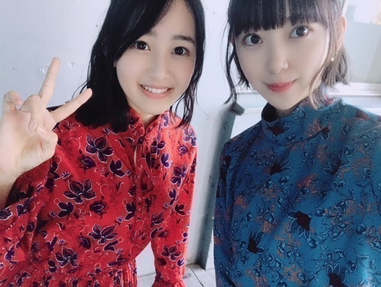

2018/1022Monchu chu

こんにちは！
10月15日生まれの人の
ラッキーカラーが
乃木坂色の 紫と聞いて
縁起がいい〜と感動している今日この頃です
☺︎
ラッキーアイテムとか
ラッキーカラーを取り入れたくなるタイプです
と、いいつつ生誕Tは黒！笑

握手会で さっそく生誕T 着ました！
皆さんとおそろい♡
ファンの皆さんもかわいくコーディネートして
着てくださっていて嬉しいです。
男性なら上におっきめの黒ブルゾン羽織って
サングラスとかしてもいいし
黒のタートルを中に着て
ズボンにtシャツを軽くインしてベルトして
マーチン(ごつめスニーカー)とかもかわいい！
女性ならショートパンツ履いて
tシャツワンピみたいにみせるのもいいし
白とかグレーのロングスカート合わせて
スニーカーも可愛いと思います☺︎
自分がデザインした服ってやっぱり
テンションあがりますね。
いつかいろんな服もプロデュース
してみたいなぁ☺︎
私服は

ブルー！私のマイブームカラー！
earring...SAINT LAURENT
onepiece...MURUA
boots...ZARA
メイクは新作コスメを早速使って
くすみピンクとラメたっぷりの
儚げ秋メイクにしてみました〜 〜
口紅は、秋冬はオレンジに挑戦したくて
SUQQUの
モイスチャーリッチリップスティック07
シャドウは
クラランスのイルミネイティングパウダーを
瞼全体に塗ってから
SUQQUのデザイニングカラーアイズ04の
左上の色を重ねて二重幅に右上の色を重ねて
左下の色を涙袋に塗りました
ナチュラルなキラキラが
最近すきです☺︎
ブルーの写真を撮ってくれたのは葉月♡
いつも私服好きって言ってくれる
かわいい妹です。


次のブログでは生誕祭のことを
書く予定です！
お待ちを。
そしてそして
次の握手会はハロウィンが近いのでなにかの
コスプレをしようか否かで迷っています。
コスプレ案がありましたら
教えてください！！
かぼちゃ以外で！！
では☺︎
2018/10/22 12:42


コメント(529)
これからも見守っていてください。
未央奈見守り応援していきます。
ブログ更新ありがとう、癒されます。
凄くカワイイ(まあ、いつもカワイイけどね)
スタイルもいいね
ブルーのワンピースは、とても似合っていて素敵です‼
生誕祭のブログを待ってま～す
乃木坂46と頑張ってるcuteでsmartな未央奈ちゃんを応援しています。
コスプレは可愛いのだったらなんでも似合いと思うよ
個人的にはマッチ売りの少女とかかな
衣装とでもかわいいです
これからも応援しています。
アキちゅぅんより。
ディズニーとかスター・ウォーズとかいかがでしょう？☆
実は、同じ誕生日です。
それにしても、後ろ姿が素敵ですね。
惚れ惚れしてしまいます。
コスプレ吸血鬼
なら俺、8ホールのネイビーに
紐をイエローに変えて履いてるー！！
ハロウィンのコスプレは魔女とか笑
魔法の杖で未央奈の虜にさせちゃうぞっ！
みたいな笑
魔法の杖無くっても未央奈の虜でーす！！
ってゆー男子、多数発見〜〜
みたいな笑笑
もしくは、フランスが好きだから
マリー・アントワネットとか笑
DA PUMPのU.S.A.風ダンサーもいいかも笑
キャ〜モンベイビ〜アメリカ〜♬
っつって踊ってファンを魅了するの笑
握手会ホンマに大変やね。
でもやはり行かねばね(笑)
生駒ちゃんの時から言うとる(笑)(泣)
って堀ちゃんスタイル良いね。
ブルーの服も似合ってますよ！
俺も好きな色です！
葉月ちゃんの赤色も似合っとうね！
ハロウィンのコスプレ？
うーん。
先生シリーズかな？
学校に保育園とか？
ギャップあったんが良きと思います。
あくまでも俺の意見ね！(笑)
ではでは、またね！
体調気をつけてくださいね！
ほなね、堀ちゃんちゃん！
写真upありがとっ
早速ですが本題です！
ズバリ ハロウィン衣装というよりは ファンが見たい衣装
カウボーイ未央奈！
男装ですが これズバリ決まると思います(∩˃o˂∩)♡
是非是非検討してみてね！
台風の目になります
╰(*´︶`*)♡
みずな
生誕T最高です。
明日のレコメン楽しみにしています。
ハロウィンの仮装は猫のコスプレがいいと思う
因みに、22thシングルの個握、一次受付でフルで申し込んだけど１枚だけ当選したんだ。本音を言えば、もっと取りたかったナァと心の中では思っているんだ。フルで当たれば、ゆっくりと話が出来るから良いナァと俺は思うんだ。
話変わるけど、ホットギミックの撮影も大変だろうけど、頑張ってネッ。
今日もメールくれてありがとう！楽しそうで良かった。
みおちゃんといくちゃんがモリモリご飯食べてるとこ想像したら僕も元気出ました 笑
というわけで堀ちゃん大好きですこんばんは( ´ ▽ ` )笑
前回のブログにコメント間に合わなかったんですが…髪切ったんですね！相変わらずめっちゃ可愛い！！
ほんとにどんな髪型でも可愛い堀ちゃん、人柄や雰囲気も好きですが、やっぱりお顔も大好きです( ´ ▽ ` )
そして改めてお誕生日おめでとうございます(o^^o)
堀ちゃんはよく「こんな私でも」と言いますが、それは間違いです。
そんな堀ちゃんだからこそ好きになってるんです、堀ちゃんじゃなければこんなに好きになれません( ´ ▽ ` )
不器用で自由、全く問題ありません、むしろそういつ真っ直ぐ夢や目標に向かっているところが好きです(^^)
堀ちゃんは知らないかもしれませんが、堀ちゃんが思ってるより僕たちは堀ちゃんのこと好きなんですよ( ´ ▽ ` )
見守るなんて言葉はおこがましいですが、これからも応援させてください(o^^o)
そしてそして、堀ちゃんブルーめっちゃ似合いますね！( ´ ▽ ` )
個人的にブルーは1番好きな色なので、ずっとマイブームでいてほしいです笑
と、勝手な意見を述べたところで、長くなってきたのでこの辺で(^^)
明日からも堀ちゃんに無条件にいいことが起こることを願ってます( ´ ▽ ` )
選んだご飯が美味しいものでありますように！
不思議と目覚めが爽やかでありますように！
堀ちゃんの行く先々で青空が広がりますように！
ではでは、明日からも大好きですー！(o^^o)
1枚目2枚目の写真…好き
Miona
レコメンも楽しみです。
これからもずっと応援していきます！
映画撮影お疲れ様でした。
公開を楽しみにしてます(^-^)
握手会裏でめっちゃ楽しんでたんですね！
他グループとの交流は未央奈が1番多いのでは？
人見知りどこいった？ 笑
お昼ご飯美味しそう
でも未央奈といくちゃんには足らないのでは？ 笑
では今日も1日楽しもうd(@^∇ﾟ)/ﾌｧｲﾄｯ♪
o(ﾟ▽＾)ﾉｼまたねぃ♪
みりあ あやね
3人頑張れ
僕は、心が折れそうになったとき、
まず、イメージの中で、環境を変えるなどの最後の手段を考えておいて、それを心の中だけにしまっておきます。
そうすると、少しだけ心にゆとりができるので、そのゆとりを使って、自分の現実に目を向けて、『その現実の中でできる精一杯のことをしよう！』と決心します。
そうすると、少し心が救われます。
夢と現実の乖離の認識が無くなってしまったときに、心が折れる気がします。
個握、また行きます！
未央奈の笑顔はみんなを幸せにします。
その現象を未央奈効果と呼びます。
生誕祭行けなかったけど、生誕祭係の方が様子をTwitterに上げてくださっていて、フライヤーとか装飾とか美術館風ですごく素敵だった︎⸜(*ˊᵕˋ*)⸝来年の生誕祭は行けたらいいなぁ…
生誕祭Tシャツすごく素敵！私服として着てもオシャレに見えそう…！未央奈が言うような着こなしができるようにまずはダイエット頑張ります(笑)
メイクのこと詳しく教えてくれてありがとう︎☺︎
オレンジリップ挑戦したいけど勇気が出ないんだよね…初めての人なら何がオススメ？よかったら教えてください〜！
仮装は、ゾンビとか他の人と被らなさそう！笑
22歳だからニャンニャンってことで黒猫とかどうかな？
仮想の写真楽しみにしてます( ¨̮ )♡
トップの写真、、び、び、美脚(´Д｀)
みお造_________は、な、ぢ
ハロウィンは____去年の渋谷や川崎のハロウィンに来る女性はゾンビメイクが多く目立ったかな
芸能人がゾンビメイクして渋谷行っても気づかれなくて良いかもね(゜-゜)
これも未央奈効果
握手会1月行けたらいいなぁ、……ヴァンパイアのコスプレしてほしいですっ
さて今日の「レコメン！」で、みおなを始め、あすかやきいちゃん、与田ちゃんやづっきーなど次世代選抜メンバーの新曲「キャラバンは眠らない」が初解禁されるそうで楽しみにしています。
既に録音予約しているので聴きたいです。
それとその曲のMVも収録されるタイプDも予約しました。
どんな内容なのかも楽しみにしています。
美脚ですね(*´꒳`*)
生誕Tシャツゲットしました（╹◡╹）♡
多用させてもらってます٩(๑❛ᴗ❛๑)۶
私服もオシャレだねー･:*+.\(( °ω° ))/.:+
葉月ちゃんとの写真もありがと〜(๑˃̵ᴗ˂̵)
コスプレしたら写真お願いします
新曲「キャラバンは眠らない」初解禁めっちゃ楽しみ♪
レコメン!絶対に聴きます☺︎
寒暖差が大きかなってきたけど体調管理に気をつけてガンバ٩( 'ω' )و
コメントする